Nos deja realmente atónitos este mundo , simple y a la vez complejo , de los virus por otra parte , inseparable del nuestro.
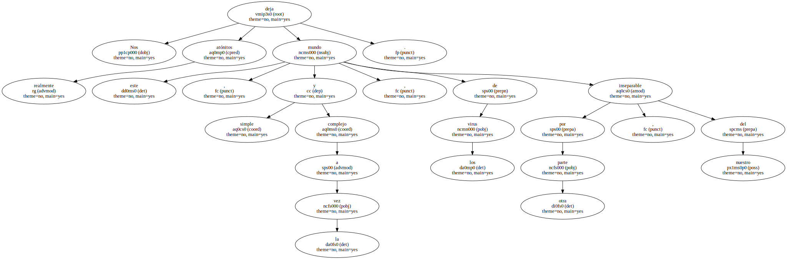Forman parte de nosotros y nosotros de ellos.
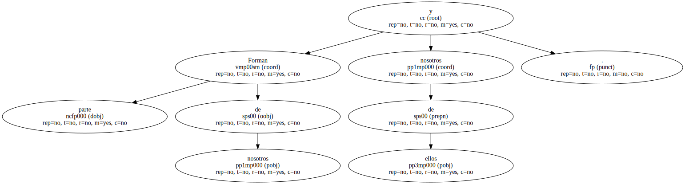Y sin embargo son uno de nuestros más encarnizados enemigos.
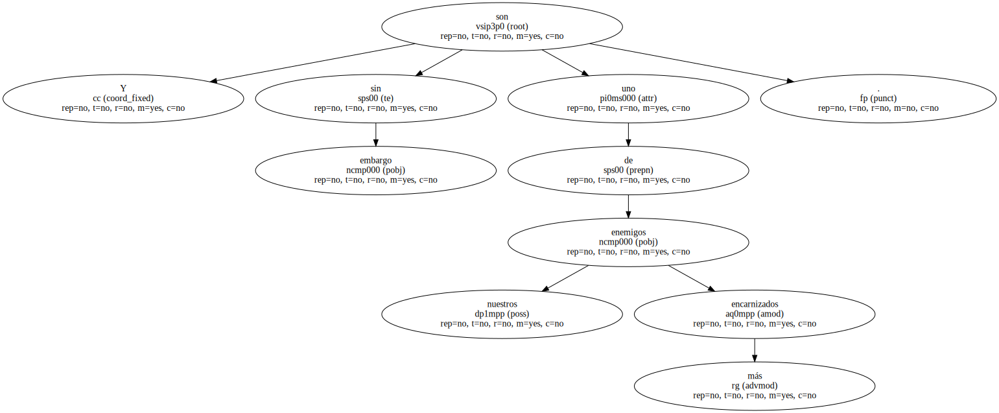- Qué moles tendrán.
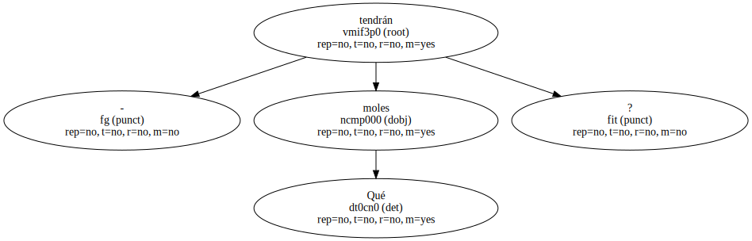Mucho queda por investigar y conocer sobre estos incómodos y peligrosos compañeros de existencia.

Por lo visto hasta ahora , no están dispuestos a ceder sus intenciones terroristas.
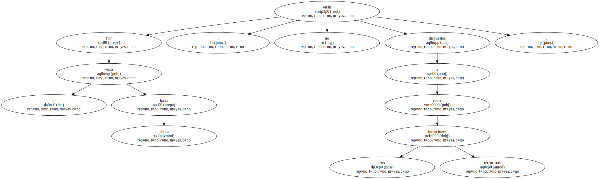A un virus mortal sucede otro , y otro más , esforzándose en minar los cimientos de la propia vida , en una carrera sin fin ; en una especie de guerra de las Galaxias en la que emplean armas cada vez más y más sofisticadas.
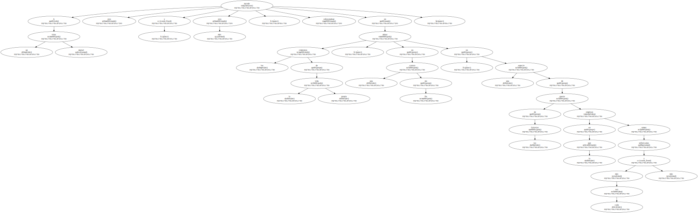El origen del SIDA se localiza probablemente en África Central.
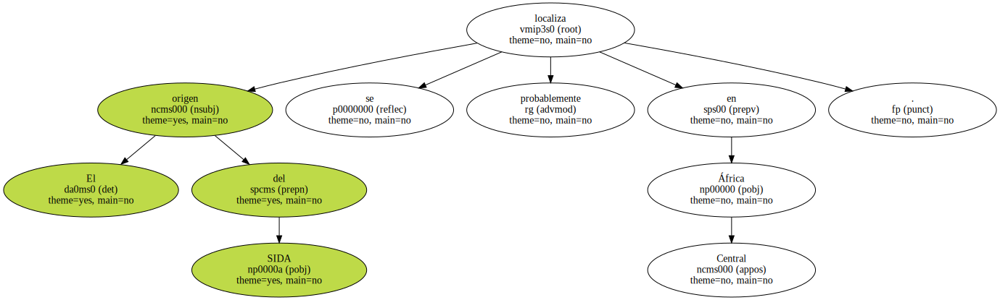Allí se han encontrado anticuerpos del SIDA , de unos quince años de antigüedad , en conservas de sangre ultracongeladas ( los virus sólo pueden sobrevivir a temperatura corporal ).

El virus , como tal , fue descubierto por franceses y norteamericanos , en 1983 , una vez que la enfermedad comenzó a manifestarse en estos países.
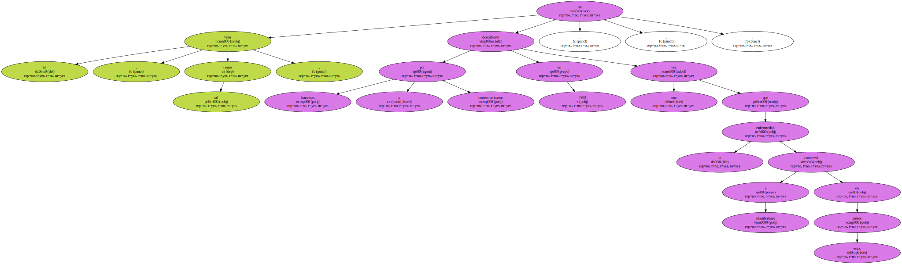A partir de entonces se pudo reconstruir el camino de la transmisión : de Africa a Haití , de allí hacia Nueva York , San Francisco y el resto de los Estados Unidos para , finalmente , alcanzar en 1982 el continente europeo.
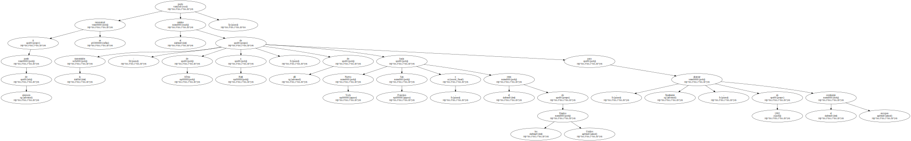Los virus han podido ser localizados en diversas sustancias líquidas del organismo humano : sangre , saliva , lágrimas y esperma.
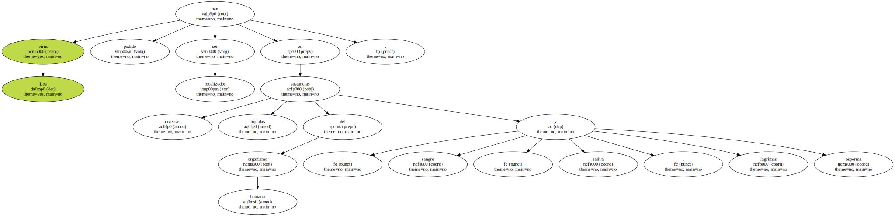Para que exista contagio , el virus ha de ser introducido en el organismo a través de alguna de estas vías.
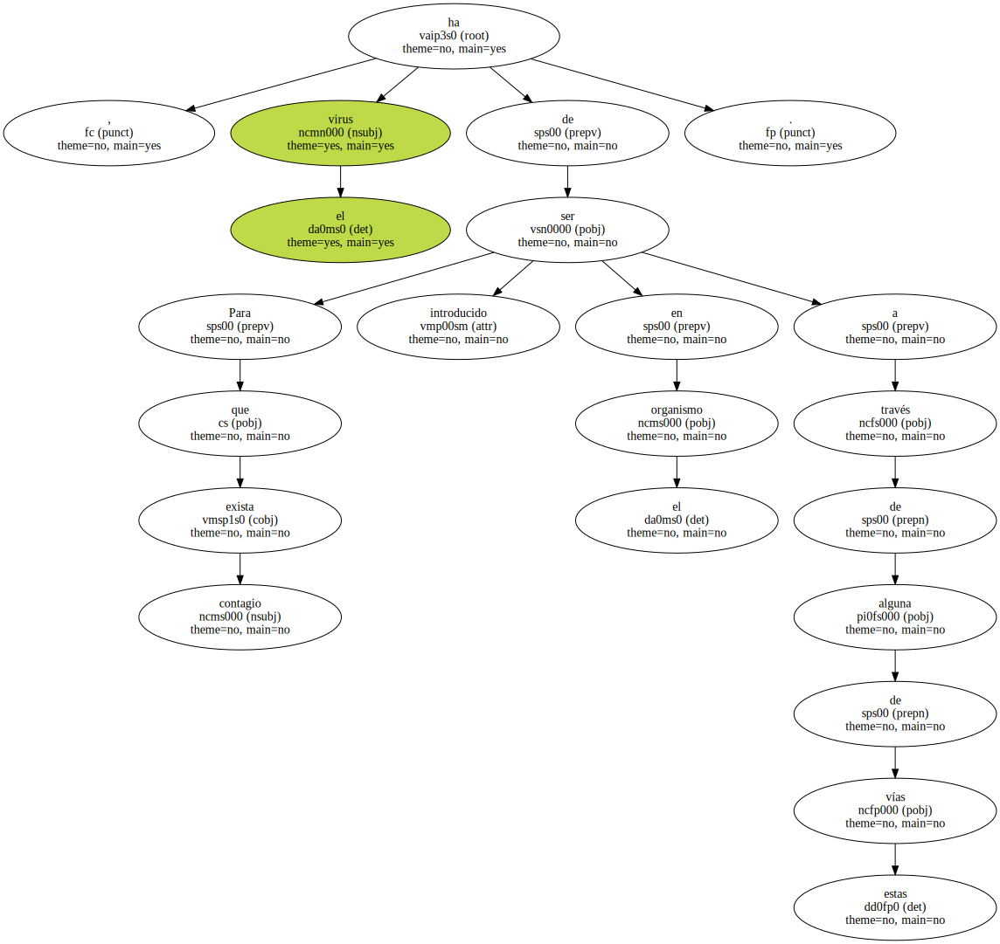Esto ha hecho que las investigaciones se centren en los llamados grupos de alto riesgo : drogadictos ( transmisión sangre-sangre por medio de jeringuillas infectadas ) , homosexuales ( transmisión esperma-sangre a través de pequeñas heridas ) , receptores de sangre en grandes cantidades , sobre todo hemofílicos ( transmisión sangre-sangre , por medio de transfusiones ).

- Qué podía haber inducido al poeta para verse arrastrado a aquel descabellado lance.
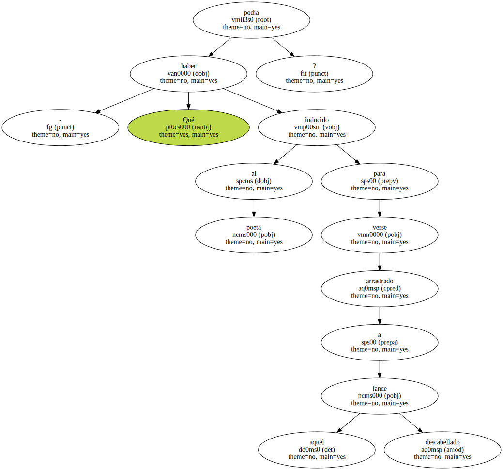